导读 在服务网易内部业务的过程中，网易智企·数帆支撑EB级数据、约1万台集群节点，每天定时调度任务超过50万。过去，从数据开发、表治理到故障诊断和业务问数，多数工作都要人进入平台完成。Agent开始参与这些流程后，问题随之具体起来：它能发现哪些数据、调用哪些操作，怎样理解指标口径，结果和风险又由谁把关？围绕这些问题，数帆对统一存储计算、EasyData开发治理和DataAgent进行了AI Native改造。
主要内容包括以下几个部分：
1. 从人工操作到Agent调用，数据平台面临三个变化
2. 让Agent用好多模态数据，先统一存储与计算
3. EasyData开放开发治理能力，执行必须受控
4. DataAgent的问数准确率，靠业务本体与Harness支撑
5. 从开发治理到业务问数，人和Agent如何分工
分享嘉宾｜蒋鸿翔 网易智企·数帆技术负责人内容校对｜韩珊珊
出品社区｜DataFun从人工操作到Agent调用，数据平台面临三个变化
传统数据平台分为三层：NDH等基础设施承载存储计算，开发治理平台负责集成、建模、质量和数据服务，上层通过BI消费数据。这套体系的功能已经比较完整，操作方式却长期围绕人设计。任务创建、SQL编写、故障排查和报表解读，都需要在不同界面完成。数据从接入到消费存在大量标准化动作，数帆希望将其中一部分开放为Agent可以调用、也可以被平台约束的服务。
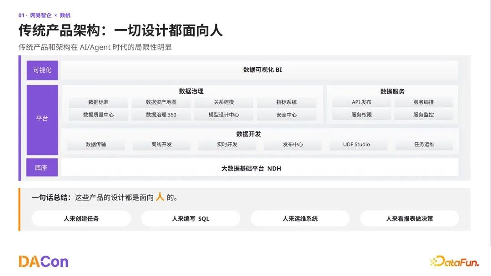

这项改造首先受到业务规模的推动。数帆服务网易内部EB级数据、约1万台集群节点，每天定时调度任务超过50万；外部有大几百家中大型客户，涵盖金融、国企、制造、零售和物流。新增业务可能带来数千乃至上万条任务，告警可以发现失败，根因仍需人工沿日志和依赖排查。外部客户在合规、权限和组织流程上的差异，也要求自动化能力能够复用和配置。
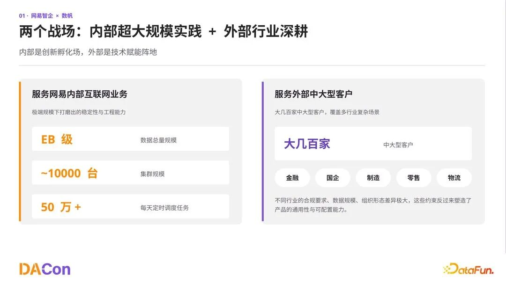

从基础设施到业务应用，数帆形成了三个判断。多模态数据会更多地与库表联合处理，OCR、语音识别、视觉质检不再只是孤立应用；MCP、CLI等接口让Agent可以组织软件服务，用户不必始终依赖GUI；业务口径则需要企业自己明确。以“赢单率”为例，销售可能以投标项目数为分母，市场使用MQL，其他团队使用SQL或商机。口径没有统一，即使模型写出的SQL可以运行，答案也可能不对。
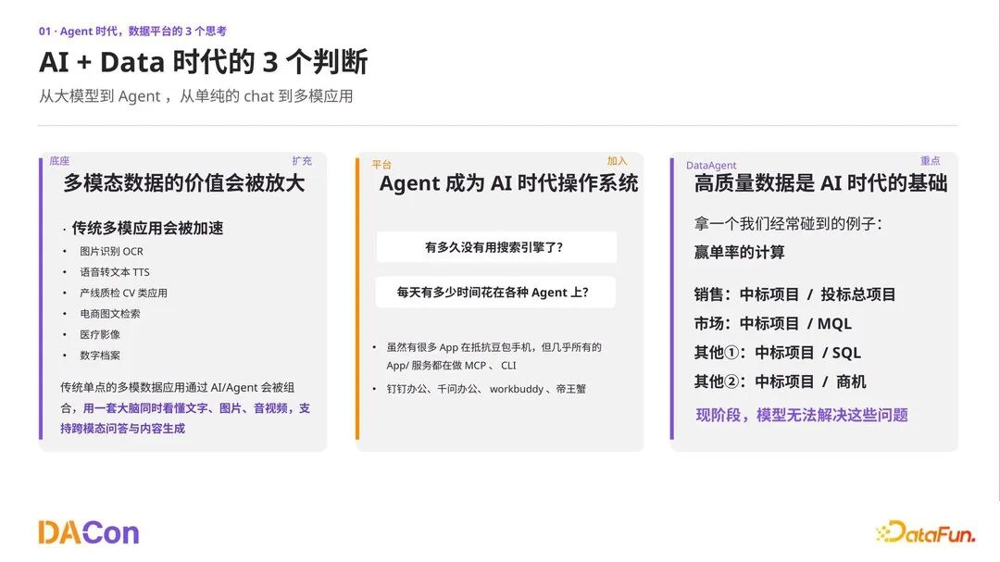

让Agent用好多模态数据，先统一存储与计算
底层先要解决数据是否可见的问题。数帆采用“Unified Storage = LakeHouse + Unified Catalog”：Iceberg、Paimon承载结构化数据，Lance等支持文档、图片、音视频和向量；Unified Catalog统一管理元数据、注册、权限与血缘。过去游离在数仓资产体系外的材料，需要进入统一目录。Agent要自主规划任务，就得知道有哪些数据、含义是什么、是否有权访问。
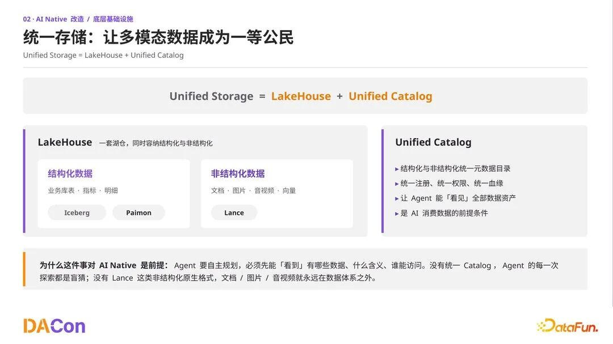

统一存储之后，还要让不同计算任务能够在一条链路上组织。数帆将Spark、Flink、OLAP的数据计算，Ray、Daft的AI特征计算和RAG知识计算纳入同一体系，共享存储与调度。图片OCR、语音ASR、视频抽帧和向量化等处理，可以同结构化明细加工和知识检索连接起来，减少Agent跨不同系统编排时的衔接环节。
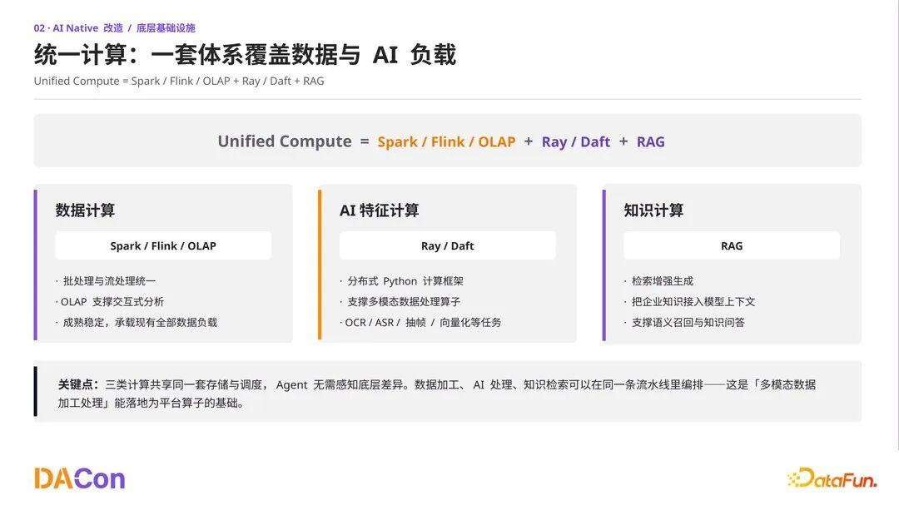

EasyData开放开发治理能力，执行必须受控
数据底座提供统一资产和计算能力，具体开发治理工作还需要平台接口承接。EasyData的Agent Native改造分为接口、技能、语义、场景、入口五层：接口开放命令与服务，Skill封装原子操作，语义层解释数据与开发规则，场景层组合任务，入口层连接不同Agent。能力尽量放在平台侧维护，入口变化时不必重新实现整套业务逻辑。
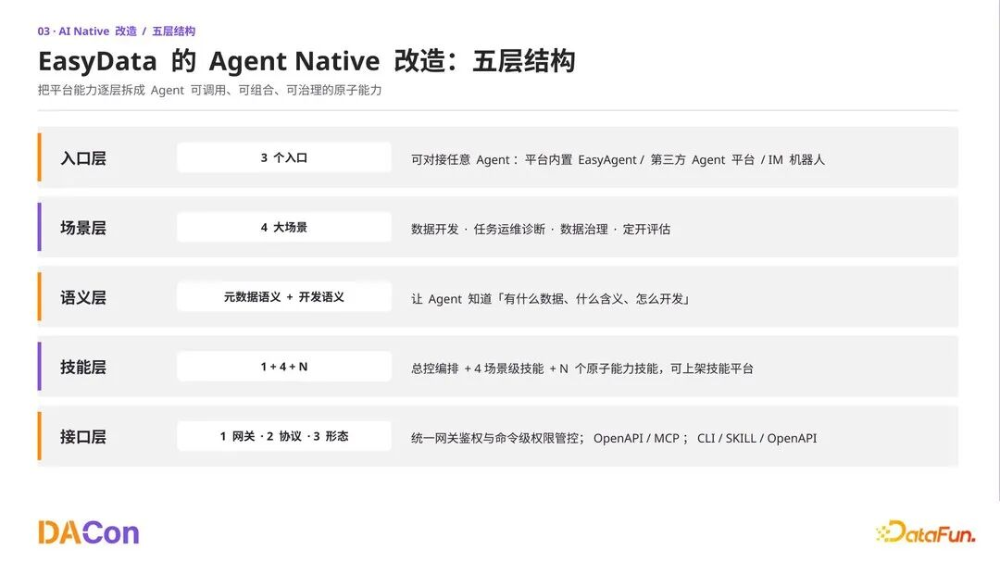

这套分层已经落到四类场景：数据开发、任务运维诊断、数据治理和定开评估。数据开发不只生成SQL，还涉及Git变更与回滚；定开评估需要核查数据源兼容性、知识清单和工作量。由场景级技能编排多个原子Skill。
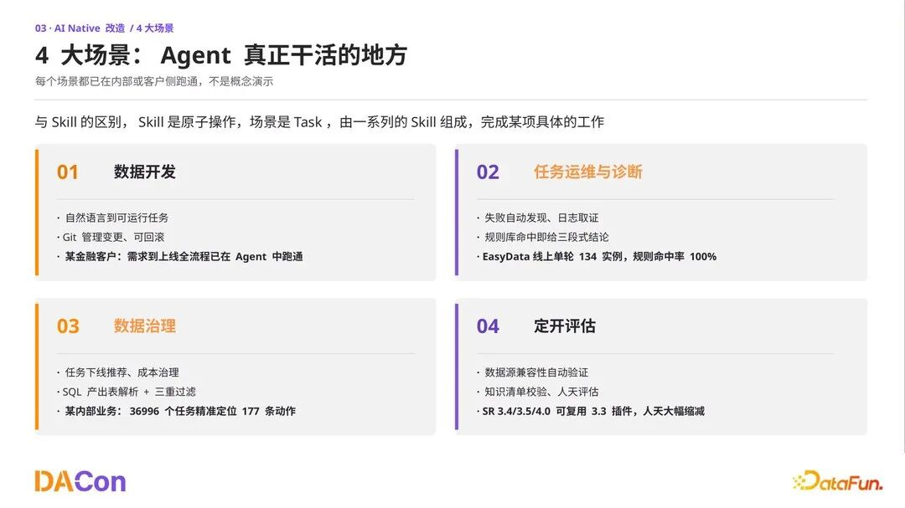

以存量表治理为例，难点在于无法轻易确认一张表已经无人使用。HDFS审计可能遗漏报表、API及外部依赖，直接回收权限还可能打断生产。数帆从数据治理360已有的“推荐下线表”清单出发，反向解析任务SQL，定位仍在写这些表的活跃任务。解析规则与EasyParser的28项对照全部一致，再排除禁用节点、暂停调度、虚拟节点和无产出表节点，根据下游依赖给出任务下线、暂停调度、节点禁用或SQL调整建议。分析全程只读，实际变更由负责人决定。
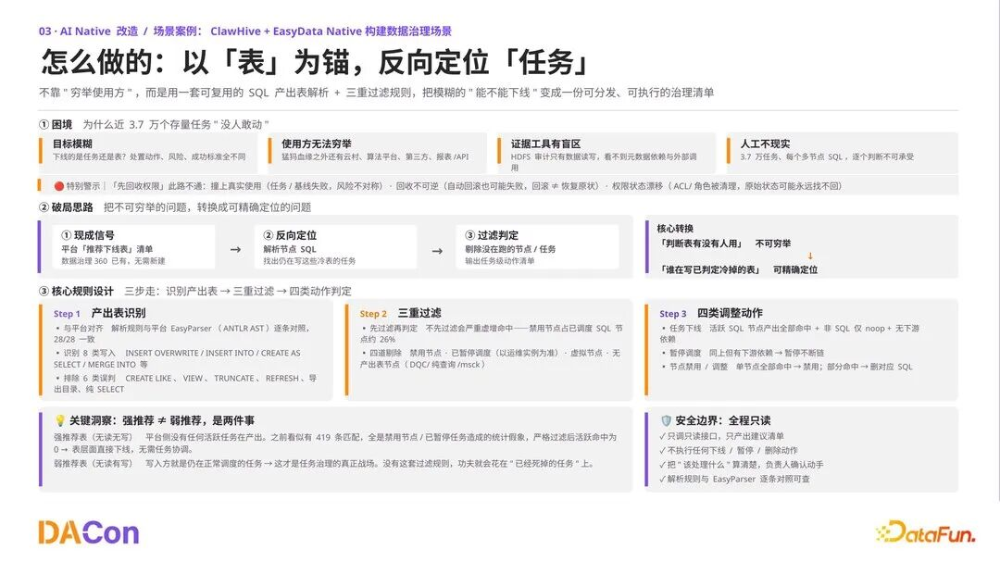

一轮专项分析从36,996个调度任务，筛到17,045个可解析SQL的单任务、7,320个已调度任务，最终形成177条建议，涉及226张表：节点禁用98条、暂停调度59条、任务下线18条、节点调整2条。另有19,951个任务组因缺少只读详情接口无法解析SQL，不能计入已覆盖范围。相同规则在另两个业务集群分别给出60条、3条建议。结果按负责人汇总，并封装为easydata-recommend-task-offline Skill；每月自动比对与通知仍属规划。
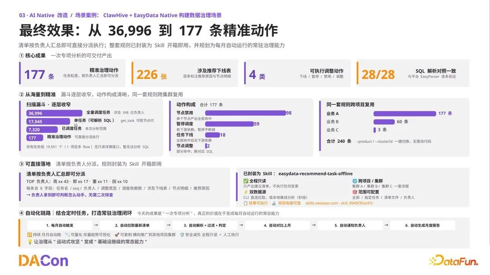

故障诊断面对的是另一种重复劳动：值班人员反复查日志、判断相似故障的原因。基于WorkBuddy和EasyData接口的值班Agent，定时拉取失败实例，按执行ID去重、定位节点、读取日志，优先匹配生效规则；未命中才交给模型归因和聚类。新规则只进入candidate候选状态，补充特征、经人工审核后才能转成active。cron负责触发，Skill负责取证，Agent组织分析和播报。当前Phase 0仅做发现、诊断、沉淀和通知，不改配置、不发布、不重跑任务。
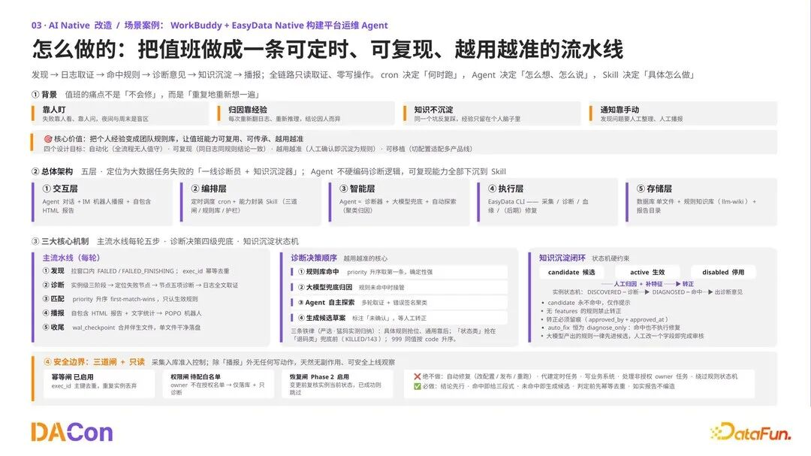

开发环境40个新增失败实例，10个命中规则、30个进入候选归因；线上A环境单轮134个实例，规则命中率100%，报告含130条明细；线上B环境36小时111个实例，12个命中，其余99个归为9类待复核。规则库有27条，其中26条生效、1条候选。4个进程并发提交600行数据也未丢失。规则命中、聚类归因和存储稳定性是不同指标，不能把99条待复核归因写成99次故障自动修复。
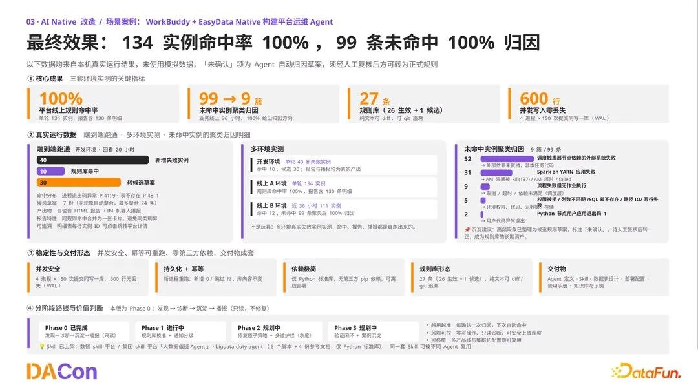

治理和诊断能否交给Agent运行，还取决于底层接口有没有统一的权限边界。数帆使用一个网关接入OpenAPI和MCP，向外提供CLI、Skill、OpenAPI三种形态，鉴权、限流和审计在网关处理。权限细化到命令：读操作依授权执行，写操作二次确认，禁止类删除操作直接拒绝。工具能被Agent发现，不等于Agent有权执行。
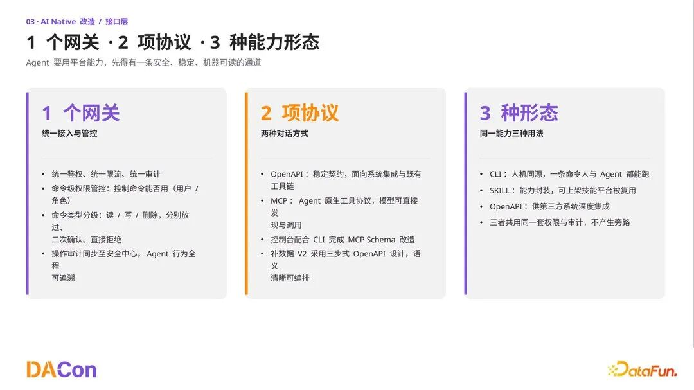

接口之上的Skill按“1+4+N”组织：一个总控编排、四类场景级技能、N个原子Skill。任务下线推荐、值班诊断、数据源验证和知识清单校验可以独立发布，也能供不同Agent复用。场景负责组合调用，原子能力保留各自的版本与权限管理。
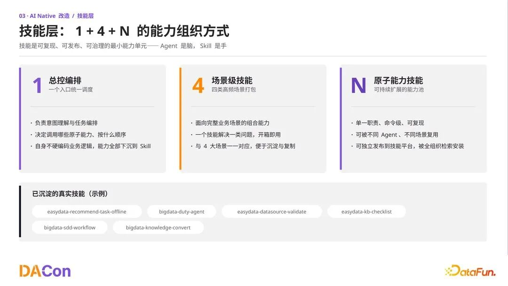

但只有接口和Skill，Agent仍不知道表、字段以及开发规范究竟代表什么。EasyData的语义分两部分：元数据语义从表结构、注释和血缘提炼业务概念；开发语义整理命名、建模、Git变更和回滚要求。数帆已在传媒场景挖掘600张表的知识，通过MCP接入开发流程。既有平台维护着元数据和开发规则，给自动化抽取提供了基础。
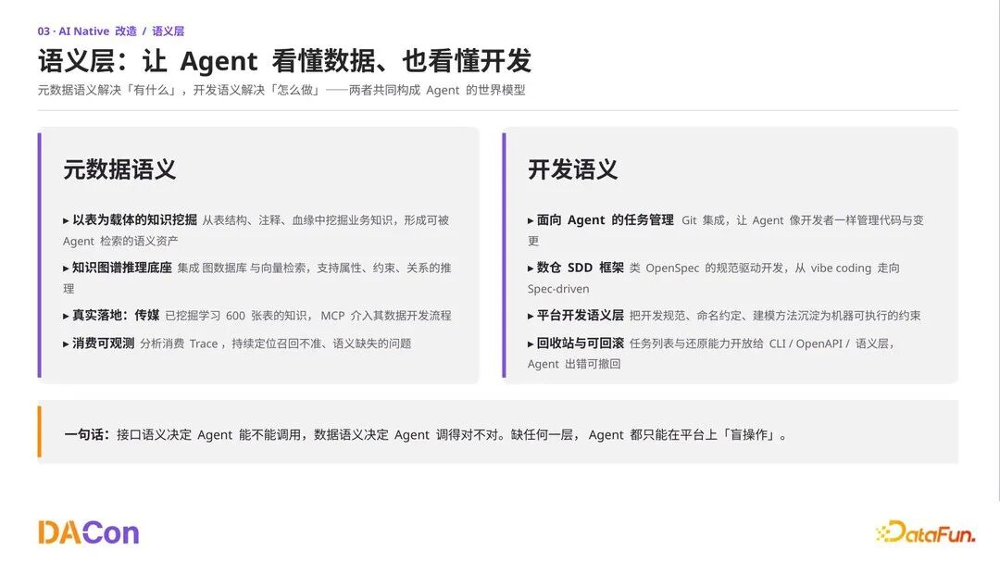

表知识库读取DDL、字段、分区、血缘、访问热度及文档，组织Catalog、DB、Table、Column等物理实体与Concept、Metric等业务实体，记录包含、派生、计算依赖等关系。图谱连接实体，向量检索补充内容召回；公式冲突和同名异义需要进入人工确认队列，经审核后入图，并保留来源。
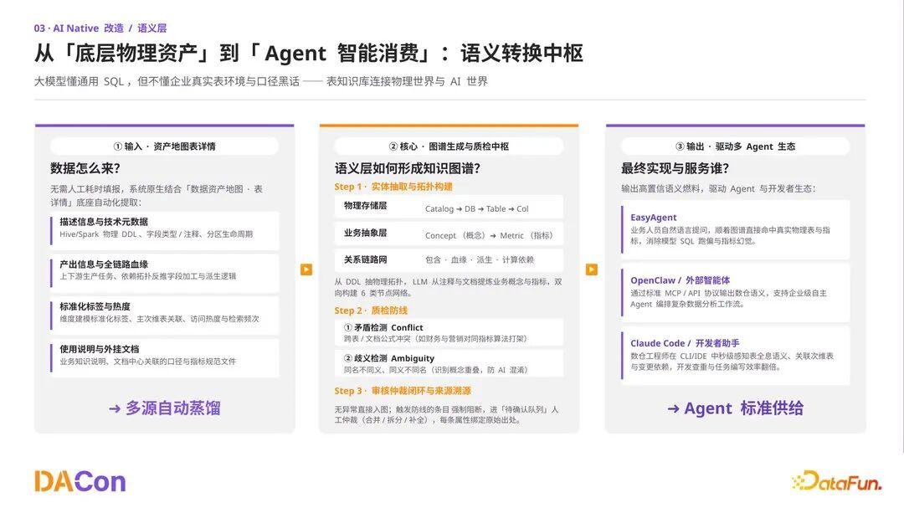

例如查询“活跃用户数”，普通相似度检索可能找出相关说明，却缺少DAU公式和对应物理表。数帆使用LightRAG的Local实体检索与Global关系检索，沿概念、指标、公式、字段、表展开关联，同时提供原始定义。图谱依托资产地图，也可以感知字段及血缘变化，减少知识与生产环境脱节的问题。
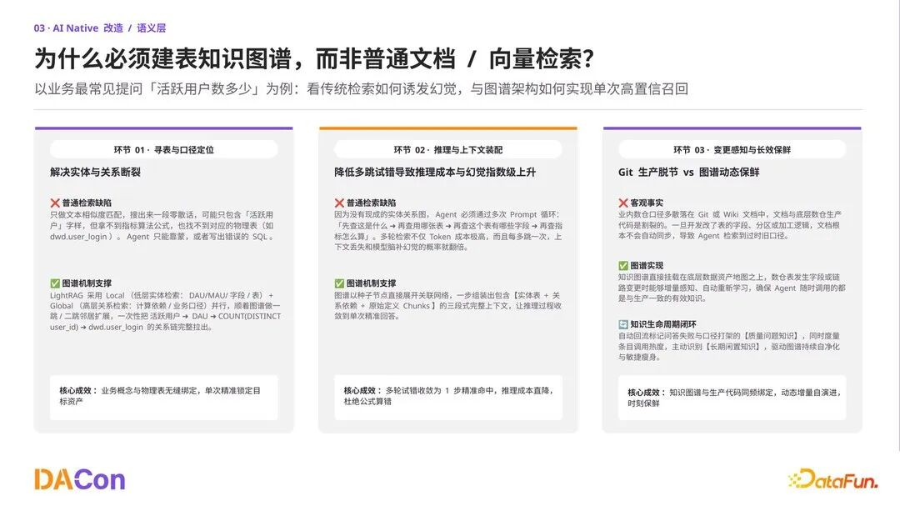

这些能力通过三类入口使用：平台内置EasyAgent、第三方Agent平台和企业IM机器人。工程师可以在CLI或熟悉的Agent中开发，值班人员通过IM接收诊断结果；不同入口共享接口、Skill、语义和审计规则。
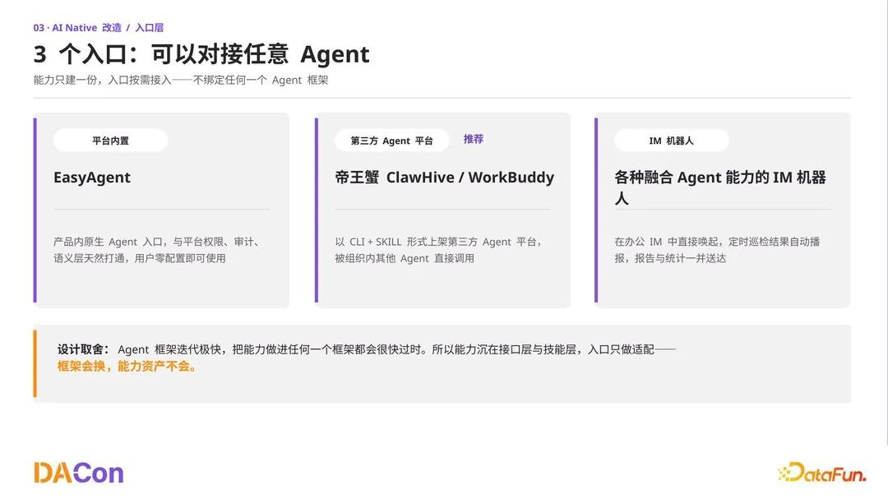

DataAgent的问数准确率，靠业务本体与Harness支撑
开发治理主要面对工程师，DataAgent则直接回答业务人员的问题，口径歧义更容易影响结果。“最近一个月利润”是本月至今还是过去30天？“销售额”是否等于GMV？数帆在数十家客户POC中观察到，单纯导入表结构后的准确率在部分场景不到50%；构建业务本体、明确术语并调整提示词后，部分场景超过95%，一位制造业客户的财务用数测试接近100%。这些数字对应具体场景，不能视作模型的通用准确率。
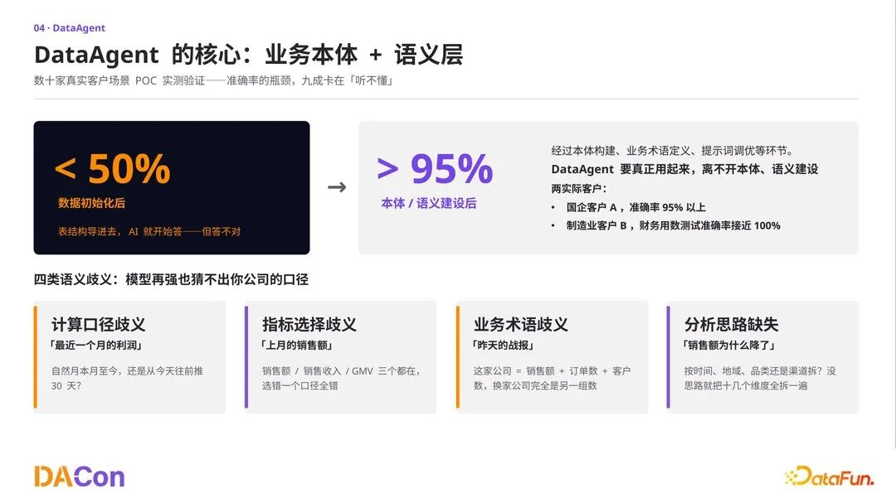

为了持续维护业务口径，DataAgent语义平台分为数据接入与计算加速、语义资产与血缘图谱、精准召回与语义增强、语义打分与结果回流四层，支持40余种数据源。主要资产包括数据集、业务本体语义和业务数据看板：数据集较容易接入，本体需要人工确认口径，看板可以复用已有成果。实际建设从具体场景开始，通过澄清记录、用户反馈和badcase补齐定义。
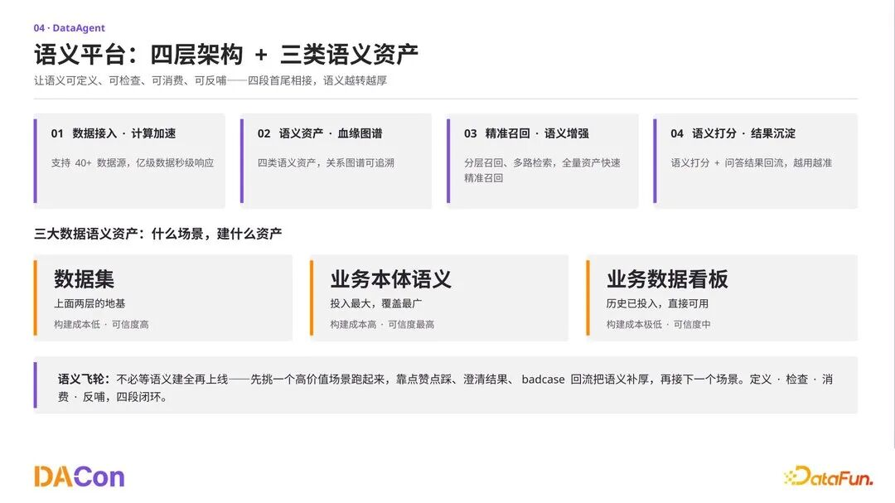

语义明确后，还要约束Agent如何得出答案。选数时从大量指标召回候选，低置信度则请求澄清；时点属性、LOD和窗口函数等复杂计算由语义层管理，模型生成Python或SQL，代码负责执行。行、列、表权限与用户属性绑定，在查询DSL中校验。执行失败可以重试、修复并留痕，真实问答和badcase持续进入评测集。数帆报告，2026年完成100余项工程优化、积累1000余条评测用例，真实场景准确率半年内从66%提升至95%以上。结果涉及语义、选数、执行和评测等多项改造，不能只归因于模型。
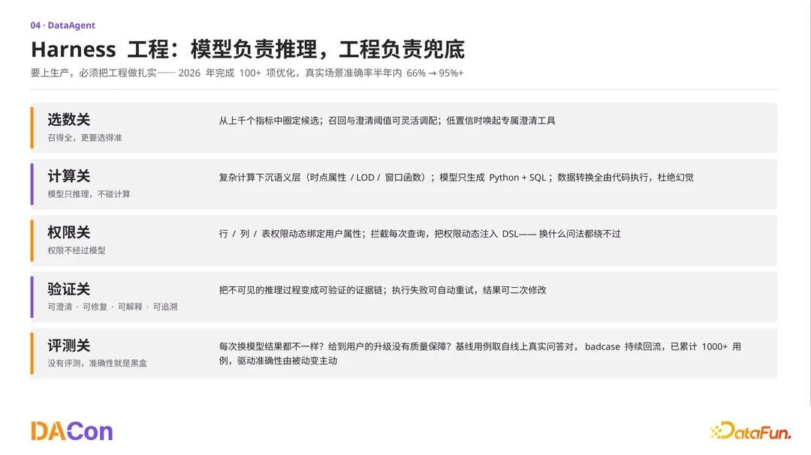

在一次问数之后，业务人员还可以继续拆解指标变化、追查原因、生成报告；确认过的分析步骤可固化为Skill，通过定时任务推送到企业IM。
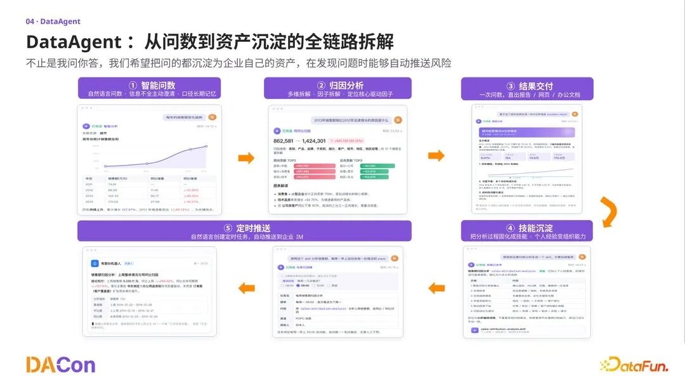

制造业客户的实践进一步连接了业务流程。采购入库、生产排产、订单执行、仓储发货、物流在途、客户签收六个环节被组织成分析链，统一计算产销计划达成率、订单履行和完美交付率，并沿环节定位延误。该项目披露，排查从数天缩短至数分钟，效率提升90%；订单准时交付率提升10%以上，产销计划达成率提升15%。这些改善来自该客户项目，不能直接外推。
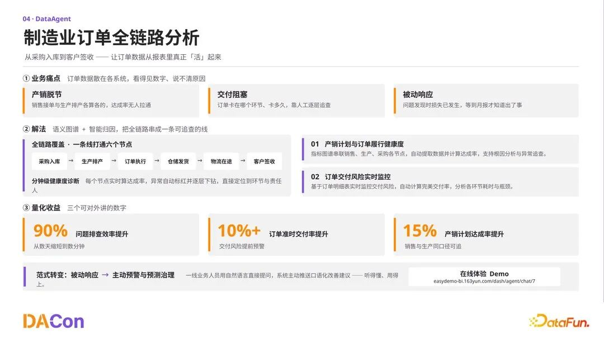

从开发治理到业务问数，人和Agent如何分工
对照EasyData和DataAgent，可以看到语义建设的两种起点。开发治理面向工程师，原有数仓工具已维护元数据、规范和任务流程，适合自下而上抽取，再向Agent开放接口与Skill；DataAgent面对业务人员，必须先确认指标实体和业务口径，再自上而下建立本体。由于业务数据未必预先治理好，DataAgent还需在语义层之上增加意图识别、澄清、选数、权限、执行验证与评测等Harness机制。
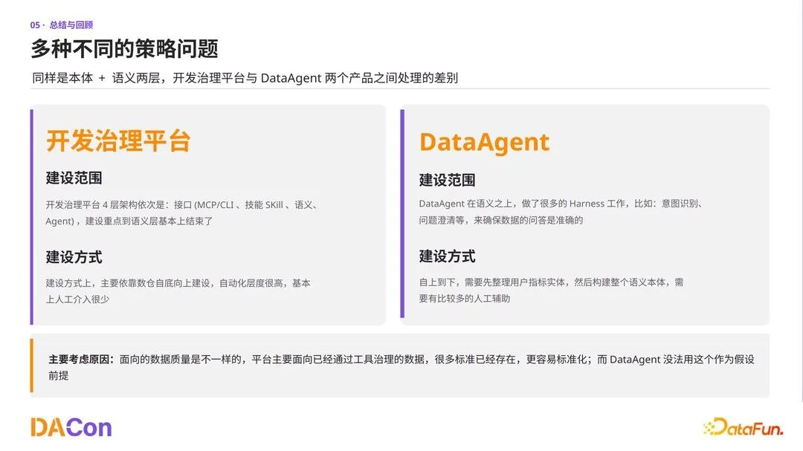

两条路线共用数据底座：底层接纳结构化与非结构化数据，中间承接数据计算、AI特征处理、知识检索及语义服务；开发治理Agent执行任务、诊断故障，DataAgent解释指标、分析业务。业务对象和操作风险不同，但数据可见性、权限和结果核验都需要由平台提供。
数帆已经把部分重复工作转成可调用、可复核的流程：冷表治理能定位到具体任务，值班Agent能自动取证并提出归因，DataAgent能沿确认过的指标口径分析业务。但拿不到详情接口的任务组仍无法纳入完整分析，未经审核的归因不能成为正式规则，有歧义的业务指标也无法交给模型自行裁决。Agent承担更多执行工作后，人的职责会更多落在定义规则、确认例外和批准高风险操作上。数据平台则必须能说明，每一次调用依据什么数据、使用了什么权限、执行结果怎样验证。自动化越深入，这些基本责任越不能省。